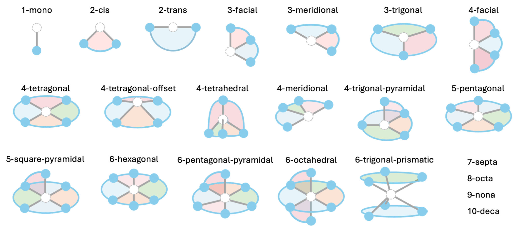
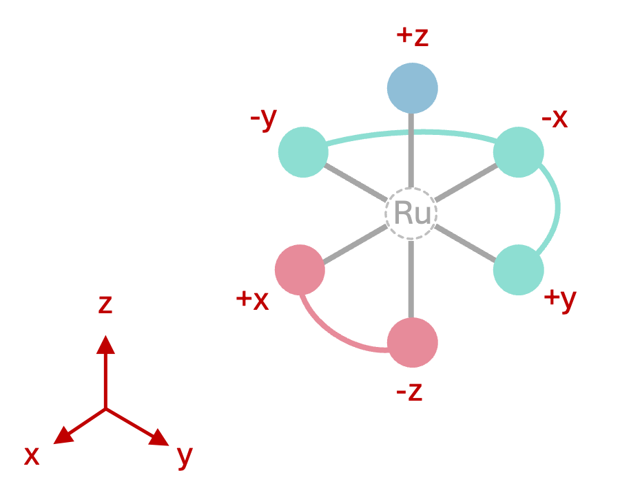

Assembler Module
Assembler Input
The DART Assembler Module generates 3D structures of novel transition metal complexes from a database of ligands, which can either be the full MetaLig database or a subset from a user-defined chemical space. While this page focuses on the input options for the assembler, you can read more about how the DART Assembler Module works here.
The assembler module is run from the command line by providing a single configuration file:
DARTassembler assembler --input assembler.yml
Copy-Paste Template:
1################## Settings for the DART assembler module ##################
2# file: assembler.yml
3# This example input file generates square-planar Pd(II) complexes with two monodentate and one bidentate ligands.
4# Everything after '#' is a comment that is ignored by the program and only there for the user.
5# If a default parameter is specified, the parameter can also just be left out/commented out.
6# The lists `ligand_db_files`, `ligand_archetypes` and `target_vectors` must have the same length, corresponding to the number of ligand sites in the complex.
7# See the 'Assembler Module' section in the DART documentation for more information and more options.
8
9output_directory: 'DARTassembler' # Path to a directory for the output files. Default: 'DARTassembler'.
10n_max_ligands: 5000 # Speed up test runs by limiting the number of ligands loaded from each ligand database. Default: None (load all ligands).
11batches:
12 - name: 'PdII' # Name of the batch. Default: 'batch_{batch_idx}'.
13 metal_centers: 'Pd' # E.g. 'Pd' for single Pd atom at origin (0,0,0). See docs for multi-metal examples.
14 total_ligand_charges: -2 # Sum of ligand charges. E.g. -2 for neutral Pd(II) complexes. Default: None (no charge filtering).
15 n_max_complexes: 100 # Max number of distinct complexes to generate. Integer or `all`.
16 ligand_db_files: # '.jsonlines' files or keywords 'metalig'/'same_as_previous'. Default: 'metalig'.
17 - 'metalig' # 1. ligand: monodentate from MetaLig
18 - 'metalig' # 2. ligand: other monodentate from MetaLig
19 - 'metalig' # 3. ligand: bidentate from MetaLig
20 ligand_archetypes: # Ligand archetypes for each ligand.
21 - '1-mono' # 1. ligand: monodentate
22 - '1-mono' # 2. ligand: monodentate
23 - '2-cis' # 3. ligand: cis-bidentate
24 target_vectors: # List of donor atom orientations for each ligand (see docs).
25 - ['+x'] # 1. ligand: 1-mono pointing along +X
26 - ['+y'] # 2. ligand: 1-mono pointing along +Y
27 - ['-x', '-y'] # 3. ligand: 2-cis pointing along -X and -Y
Users can download this template into their current directory as assembler.yml by running:
DARTassembler configs --outdir .
Ligand Archetypes and Target Vectors
Ligand Archetypes :
Each ligand in the MetaLig database is classified into one of 22 archetypes based on the orientation of its donor atoms around the metal center. For example, bidentate ligands are either 2-cis or 2-trans, and tridentate ligands either 3-facial, 3-meridional or 3-trigonal. Ligands of denticity 2-6 can have one of multiple archetypes defined, while ligands of denticity 1 and 7-10 have simply all ligands collected in a single archetype. The full list of defined archetypes is shown in Figure 1.
{kind=link}

Figure 1: Graphical overview of all 22 ligand archetypes defined in DART.
Target Vectors :
The target_vectors option specifies the orientation of each ligand’s donor atoms relative to the metal center during complex assembly. For example, for a 1-mono ligand one has to specify a single vector (e.g. ['z']), meaning the metal-donor bond will point along the +Z axis, placing the monodentate on top of the metal center. For a 2-cis ligand, two orthogonal vectors must be provided (e.g. ['x', 'y']), meaning the two donor atoms will point along the +X and +Y axes, placing the bidentate ligand in a cis arrangement in the x-y plane. For a 2-trans ligand, two opposite vectors must be provided (e.g. ['x', '-x']), meaning the ligand will coordinate to the metal center from opposite sides along the X axis. For a 3-trigonal ligand, three vectors separated by 120° must be provided (e.g. ['xy(0)', 'xy(120)', 'xy(240)']), meaning the three donor atoms will point in a trigonal planar arrangement around the metal center in the x-y plane.
Target vectors can be specified in three formats:
Symbolic axis indicators:
'+x','-x','+y','-y','+z','-z'for the Cartesian axes. For example,'+x'means the vector[1, 0, 0]and'-z'means the vector[0, 0, -1]. The specification'x'is equivalent to'+x'.Angled vectors in the x-y plane from the y-axis:
'xy(angle_in_degrees)'. For example,'xy(120)'means the vector[sin(120°), cos(120°), 0].Explicit Cartesian triplets: e.g.
[0, 0, 1],[-1, 0, 0], etc.
Table 1 provides a full list of all defined ligand archetypes and an example set of target vectors for each archetype.
archetype |
example target vector |
|---|---|
1-mono |
+x |
2-cis |
+x, +y |
2-trans |
+x, -x |
3-facial |
+x, +y, +z |
3-meridional |
+y, +x, -y |
3-trigonal |
xy(0), xy(120), xy(240) |
4-facial |
+x, +y, +z, -z |
4-tetragonal |
+x, +y, -x, -y |
4-tetragonal-offset |
(1,0,–1), (0, 1,-1), (-1,0,-1), (0,-1,-1) |
4-tetrahedral |
(1,1,-1), (-1,1,1), (1,-1,1), (-1,-1,-1) |
4-meridional |
xy(0), xy(60), xy(120), xy(180) |
4-trigonal-pyramidal |
xy(0), xy(120), xy(240), +z |
5-pentagonal |
xy(0), xy(72), xy(144), xy(216), xy(288) |
5-square-pyramidal |
+x, +y, -x, -y, +z |
6-hexagonal |
xy(0), xy(60), xy(120), xy(180), xy(240), xy(300) |
6-pentagonal-pyramidal |
+z, xy(0), xy(72), xy(144), xy(216), xy(288) |
6-octahedral |
+x, +y, +z, -x, -y, -z |
6-trigonal-prismatic |
(0,1,-0.5), (0.87,-0.5,-0.5), (-0.87,-0.5,-0.5), (0,1,0.5), (0.87,-0.5,0.5), (-0.87,-0.5,0.5) |
7-septa |
xy(0), xy(51.4), xy(102.9), xy(154.3), xy(205.7), xy(257.1), xy(308.6) |
8-octa |
xy(0), xy(45), xy(90), xy(135), xy(180), xy(225), xy(270), xy(315) |
9-nona |
xy(0), xy(40), xy(80), xy(120), xy(160), xy(200), xy(240), xy(280), xy(320) |
10-deca |
xy(0), xy(36), xy(72), xy(108), xy(144), xy(180), xy(216), xy(252), xy(288), xy(324) |
In general, you can specify any set of target vectors you like, as long as they match the ligand archetype you want to use for the binding site.
For example, if a user wants to assemble an octahedral structure with one monodentate on top, one mer-tridentate in the equatorial plane and one cis-bidentate occupying the remaining two faces, the target vectors would be specified as:
# Example: Octahedral Ru complex with 1-mono, 2-cis and 3-mer ligands
metal_centers: Ru
ligand_archetypes:
- '1-mono'
- '2-cis'
- '3-meridional'
target_vectors:
- ['+z'] # monodentate pointing along +Z
- ['+x', '-z'] # cis-bidentate pointing along +X and -Z
- ['+y', '-x', '-y'] # mer-tridentate pointing along +Y, -X and -Y
{kind=link}

Figure 1: Octahedral complex geometry defined by the target_vectors above.
Of course, this is not the only choice of target vectors. Many other combinations are possible and will result in the same complex, just rotated.
The provision of target vectors allows the user fine-grained control over the geometry of the assembled complexes. Combined with the full list of 22 different ligand archetypes, the DART assembler can create an extensive variety of complex geometries.
Examples
Let’s try another example: a square-planar complex with two monodentates and one trans-bidentate. The ligand archetypes and target vectors could be specified as:
# Example: Square-planar complex with two 1-mono and one 2-trans ligands
ligand_archetypes:
- '1-mono'
- '1-mono'
- '2-trans'
target_vectors:
- ['+x'] # 1. monodentate along +X
- ['-x'] # 2. monodentate along -X
- ['+y', '-y'] # trans-bidentate along +Y and -Y
One more example for a trigonal-bipyramidal complex with one trigonal ligand and two monodentates:
# Example: Trigonal-bipyramidal complex with one 3-trigonal and two 1-mono ligands
ligand_archetypes:
- '1-mono'
- '1-mono'
- '3-trigonal'
target_vectors:
- ['+z'] # 1. monodentate along +Z
- ['-z'] # 2. monodentate along -Z
- ['xy(0)', 'xy(120)', 'xy(240)'] # trigonal ligand in x-y plane
Finally, a tetrahedral complex with four monodentates. For the tetrahedral geometry, the target vectors are a little more complicated, but they are actually given in Table 1 under the 4-tetrahedral ligand archetype:
# Example: Tetrahedral complex with 1 cis-bidentate and two monodentates
ligand_archetypes:
- '1-mono'
- '1-mono'
- '2-cis'
target_vectors:
- [ [1.0,1.0,-1.0] ] # 1. monodentate
- [ [-1.0,1.0,1.0] ] # 2. monodentate
- [ [1.0,-1.0,1.0], [-1.0,-1.0,-1.0] ] # cis-bidentate
Haptically coordinating ligands
The MetaLig database also contains many haptically coordinating ligands. DART can assemble these haptically coordinating ligands just as well as non-haptic ones. In haptic ligands, each group of haptic donor atoms is treated as a single pseudo donor atom located at the centroid of the haptic group. For example, a Cp* ligand has a single group of 5 haptic donor atoms. Thus, it is treated as a 1-mono ligand and can be assembled by providing a single target vector. For example, to assemble a Cp* ligand such that it coordinates from above the metal center, one would provide the target vector ['+z'] (see the advanced example). One can query haptically coordinating ligands in the LigandFilters by targeting the properties n_eff_denticities, n_denticies, n_haptic_groups, and n_haptic_atoms.
Assembler Output
The output of the DART assembler will be saved in a specific folder. This folder is determined by the output_directory you set in your assembly input file. Within this folder, each generated metal complex has a unique name such as 'ZUMUVAMI'. This name is randomly generated by DART but you can control its length via the complex_name_length option in the input file. If you want to append a custom string to each complex name for labeling purposes, you can do so via the complex_name_appendix option.
The assembler module creates not only the xyz files for each complex but also various other files that could be of interest. Below, you’ll find an overview of all files and folders generated by the DART assembler.
Folder Structure
Here’s what the output folder will look like:
output_directory/
├── isomers.csv (Summary Table)
├── input/ (Copy of Input .yml)
├── log.txt (Log File)
└── batches/ (Batch Folders)
├── batch_1/
│ ├── concat_passed_complexes.xyz
│ ├── concat_failed_complexes.xyz
│ ├── concat_all_complexes.xyz
│ └── complexes/ (Individual Complex Folders)
│ └── NAME/
│ ├── NAME.json (Complex Data File)
│ ├── NAME1.xyz (Isomer 1 Structure)
│ ├── NAME2.xyz (Isomer 2 Structure)
│ └── ...
└── batch_2/
└── ...
Output Files
- General Output Files:
These files provide a broad overview of the assembly process:
batches/: This is a folder that contains all the batches of assembled complexes.isomers.csv: This is a summary table listing all isomers of all complexes generated across all batches. It includes details such as complex names, ligand combinations, archetypes, stoichiometries, and assembly status (successful or failed).input/: This folder contains a copy of the input .yml file used to run the assembler for record-keeping.log.txt: This is the main log file that records all messages, warnings, and errors during the assembly process.
- Batch-Specific Files:
Inside the
batches/folder, you’ll find separate folders for each batch. These folders may contain:complexes/: This is a folder that contains all the complexes for that batch.concat_passed_isomers.xyz: Concatenated .xyz file of all successfully assembled complexes.concat_failed_isomers.xyz: Concatenated .xyz file of all complexes that failed assembly.concat_all_isomers.xyz: Concatenated .xyz file of all complexes, both successful and failed.
If a file is missing, that means no complexes fall into that category for the batch (e.g., no failed complexes). Concatenated .xyz files can easily be browsed using the
ase guicommand from the ASE package:ase gui concat_passed_isomers.xyz
- Complex-Specific Files:
Within each batch, each complex has its own folder under
complexes/NAME/. These folders contain:NAME.json: A machine-readable data file with detailed information about the complex and its isomers.NAME1.xyz: 3D structure of the 1. isomer of the complex.NAME2.xyz: 3D structure of the 2. isomer of the complex.…
Assembler Options
The DART assembler module is usually run via a .yml configuration file. This .yml file will then be passed to the following class. Please refer to the docstrings of this class and its run_batch() method for a detailed description of all available options. You will see that the options match perfectly with the options in the .yml configuration template above.
- class DARTassembler.src.assembler.assembler.Assembler(output_directory='DARTassembler', verbosity=2, complex_name_length=8, n_max_ligands=None)[source]
Bases:
BaseModuleAssemble isomers of transition-metal complexes from ligand databases such as the MetaLig.
Initialize the DART Assembler module. The options set here applied to all batches.
Tip
All the parameters below are available as well via the assembler .yml file as global options (i.e. without indentation).
- Parameters:
output_directory (str | Path) – Directory to save the DART assembler output files.
verbosity (int) – Logging verbosity (0=errors only, 1=warnings, 2=info, 3=debug).
complex_name_length (int) – Length of random complex names such as ‘ZUMUVAMI’. Increases automatically if otherwise a name clash would occur.
n_max_ligands (int | None) – Maximum number of ligands to load from each
ligand_db_file. IfNoneor left unspecified, all ligands are loaded.
- Returns:
None
- Return type:
None
- run_batch(name, batch_idx, target_vectors, metal_centers, n_max_complexes, ligand_db_files='metalig', ligand_archetypes=None, ligand_origins=None, total_ligand_charges=None, monoaxial_optimization=True, permutable_ligands=None, force_all_isomers=False, duplicate_tolerance=0.5, clashing_tolerance=-0.3, clashing_metal=False, complex_name_suffix='', random_seed=None, background_file=None, background_translation=None)[source]
Run the DART assembler for a single batch.
- Parameters:
batch_idx (int) – Index of the batch in the list of batches. This is the only option that is not available in the input .yml file because it is set automatically when running multiple batches.
Tip
All the parameters below are available as well via the assembler .yml file as batch options (i.e. indented in the
batches:list).- Parameters:
name (str) – Name of the batch. All batch names must be unique.
target_vectors (list[list[list[float, float, float]]] # shape: (n_ligands, n_donors_per_ligand, 3)) – List of target vectors for each ligand. Each entry is a list of donor vectors of length 3.
metal_centers (str | list[str, list[float]]] | list[list[str, list[float]]]) –
Metal center specification. Either a single element symbol string (e.g. ‘Ru’) or a nested structure per ligand. Examples:
Single Ru atom at origin (0,0,0):
RuSingle Ru atom at custom position:
['Ru', [1.5, 0.0, -1.0] ]Ru and Cu atoms 4 Å apart:
[ ['Ru', [-2.0, 0.0, 0.0] ], ['Cu', [2.0, 0.0, 0.0] ] ]
n_max_complexes (int | str) –
Maximum number of complexes (not isomers) to assemble or
'all'to exhaust all possible combinations of ligands (respectingtotal_ligand_charges).Warning
Due to to the combinatorial explosion of possible complexes, setting this to
'all'can lead to very very many complexes and long runtimes if used with multiple ligand databases with each many ligands. Use with caution.ligand_db_files (list[str] | str) – If left unspecified or set to
'metalig', the entire MetaLig database is used. If a single path to a ligand .jsonlines file, that database is used for all ligand sites. If a list of strings, the list must have the same length astarget_vectorsand each entry is the ligand database that will be sampled to populate the respective ligand site. One exception: the keyword'same_as_previous'can be used instead of a filepath to indicate that the ligand for that site will always be populated with the same ligand as the one chosen from the previous ligand database.ligand_archetypes (list[str] | None) – If specified, filters the ligand database at this index to only contain ligands of the specified archetype. The list must have the same length as
target_vectors. If left unspecified, no filtering is applied and all ligands in the database with matchingn_eff_denticityare considered.ligand_origins (list[ list[float, float, float] ] | None) – If specified, applies a shift to the position of the ligands. If not specified, the metal center position(s) are used for ligands coordinating to one metal and the midpoint between two (or more) metal centers for bridging ligands. Must have the same length as
target_vectors.total_ligand_charges (int | None) – If specified, only ligand combinations with this sum of ligand charges are considered. If left unspecified or None, no charge filtering is applied. This allows to control the overall charge and metal oxidation state of the assembled complex. For example, to generate neutral Pd(II) complexes the
total_ligand_chargesshould be set to -2.monoaxial_optimization (bool) – Whether to optimize the orientation of monoaxial ligands (
1-monoand2-transarchetypes) around their single binding axis to minimize clashes and maximize distance to other ligands. In general recommended but significantly increases runtime. Can be turned off without problems for much faster assembly and when the orientation of monoaxial ligands relative to the other ligands is not critical, especially for small monodentate ligands.permutable_ligands (list[int] | None) –
Groups of ligands that should be permuted when generating isomers. Must have same length as
target_vectors. Only ligands with the same archetype can be permuted. If None or left unspecified, no ligands are permuted. For example, if you generate octahedral complexes, the following will permute the two monodentate ligands but not permute the two bidentate ligands (think of each integer as a “color” assigned to each ligand; ligands with the same color are permuted among each other):target_vectors: [ [ '+z' ], [ '+x' ], [ '-x', '-y' ], [ '+y', '-z' ] ] ligand_archetypes: ['1-mono', '1-mono', '2-cis', '2-cis'] permutable_ligands: [1, 1, 2, 3]
force_all_isomers (bool) –
If False (default), DART does not generate the following types of isomers because they are considered symmetrically equivalent:
For ring-like ligands with archetypes
3-trigonal,4-tetragonal,5-pentagonal, and6-hexagonal, DART removes isomers which correspond to just rotating the ligand around it’s centering axis. E.g. for a trigonal ligand, rotating the ligand by 120° or 240° around the metal center is not considered a new isomer. Ligands with these archetypes will therefore return only two isomers, facing up and down the centering axis (mirror images of each other).Ring-like ligands with archetypes
4-trigonal-pyramidal,5-square-pyramidal, and6-pentagonal-pyramidalcan also be rotated around the z-axis. However, this time there is an additional atom on top of the ring, breaking the z mirror symmetry, therefore returning only a single isomer.For ligands with archetypes
4-tetrahedral,6-octahedral,6-trigonal-prismatic,7-septa,8-octa,9-nona, and10-deca, the ligand is so bulky that it is assumed there are no other ligands around the complex and only one isomer is generated.
If
force_all_isomersis set to True, DART will generate these types of isomers as well. However, exact 3D duplicates of isomers will still be filtered out in the post-assembly checks ifduplicate_toleranceis set.duplicate_tolerance (float | None) – Tolerance used to identify duplicate isomers in the post-assembly checks. Increase this value to make more isomers pass the duplicate filter. Decrease (up to 0.0) to make the filter more strict. If None, no duplicate filtering is applied.
clashing_tolerance (float | None) – Tolerance for detecting clashing ligands in the post-assembly checks. The tolerance will be added to the sum of the van der Waals radii of two atoms to determine whether they clash. Increase this value to make the clash filter more strict. If None, no clash filtering is applied.
clashing_metal (bool) – If True, include ligand-metal and metal-metal pairs in clash checks.
complex_name_suffix (str) – Optional suffix to append to each generated complex name, e.g.
'ZUMUVAMI_OOH'if suffix is set to'_OOH'. Useful for tracking complexes in downstream analysis.random_seed (int | None) – Random seed for reproducibility. Defaults to the batch index if None.
background_file (str | None) – EXPERIMENTAL OPTION: Optional path to an .xyz file to use as a “background” structure for each isomer. This background structure will be combined with each generated isomer and saved as an additional structure named
<isomer_name>_combined.xyzin each complex directory. The background structure can contain e.g. solvent molecules or a surface. The background structure is an experimental option that is not considered during assembly, clash checks, or duplicate checks; and it is neither present in the concatenated .xyz files nor in the summary .csv file or the complex .json files. It is only saved as an additional single .xyz file per isomer for user convenience. If None, no background structure is used.background_translation (list[float, float, float]) – EXPERIMENTAL OPTION: Translation applied to the background structure. If e.g.
[0, 0, -1], the background structure is shifted by -1 Å in z-direction before combining with the isomer. If None, no translation is applied.
- Returns:
None
- Return type:
None
- run(batches)[source]
Execute assembly for a sequence of user-defined batches.
Each batch dictionary describes inputs for a single assembly run. This method validates batch names, logs run metadata, saves the input settings and iterates over batches calling the internal batch runner.
- Parameters:
batches (list[dict]) – List of batch specification dictionaries as expected by _run_batch.
- Returns:
None
- Return type:
None
- classmethod run_from_yaml(input)[source]
Instantiate and run an Assembler using a YAML configuration file.
If input is None, the project’s default assembler YAML template is used. The YAML must contain top-level options accepted by Assembler.__init__ and a ‘batches’ list.
- Parameters:
input (Union[str, Path, None]) – Path to YAML configuration file or None to use the default template.
- Returns:
Assembler instance after executing the specified batches.
- Return type:
- classmethod run_from_cli(input)[source]
Run the Assembler from a command-line context with pre/post hooks.
Wraps run_from_yaml and integrates BaseModule CLI logging hooks.
- Parameters:
input (Union[str, Path, None]) – Path to YAML configuration file or None to use the default template.
- Returns:
Assembler instance after run completion.
- Return type: